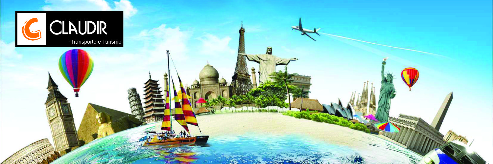

Viagens

Turismo

Uma nova resolução da Agência Nacional de Transportes Terrestres (ANTT) passa a autorizar, a partir de agosto, o fretamento de micro-ônibus e vans (de 8 a 20 passageiros) para o transporte de turistas em viagens interestaduais e internacionais de até 540 quilômetros. Até agora, este tipo de viagem era proibido em veículos que ofereciam menos de 20 lugares – de modo que as agências tinham de usar ônibus maiores, mesmo que os assentos fossem subutilizados. A publicação da nova norma levou em consideração uma reivindicação antiga do setor.
A nova regra tem pontos positivos, segundo a coordenadora-geral de Competitividade e Inovação do Ministério do Turismo, Tamara Galvão. “A mudança ajuda a criar um novo nicho de mercado para empresas que já atuam no segmento, mas não podiam fazer o transporte interestadual”, afirma. Em maio último, representantes da pasta defenderam, em audiência pública na Câmara dos Deputados, a regulamentação de um projeto de lei que permite fretar vans para transportar turistas entre estados. Na ocasião, o superintendente de Transportes de Pessoas da ANTT, Muñoz Lopez, apresentou a proposta para a resolução que agora foi aprovada.
Veículo executivo equipado com 11 lugares.
Veículo executivo equipado com 15 lugares.
Veículo convencional equipado com 15 lugares.
Veículo executivo equipado com 18 lugares.